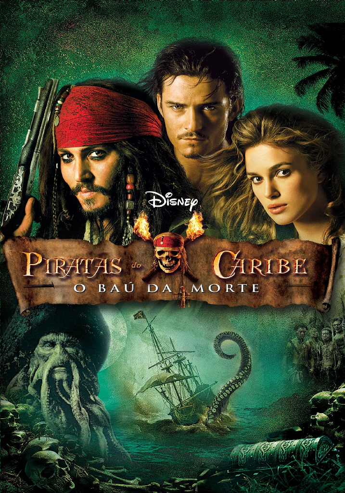
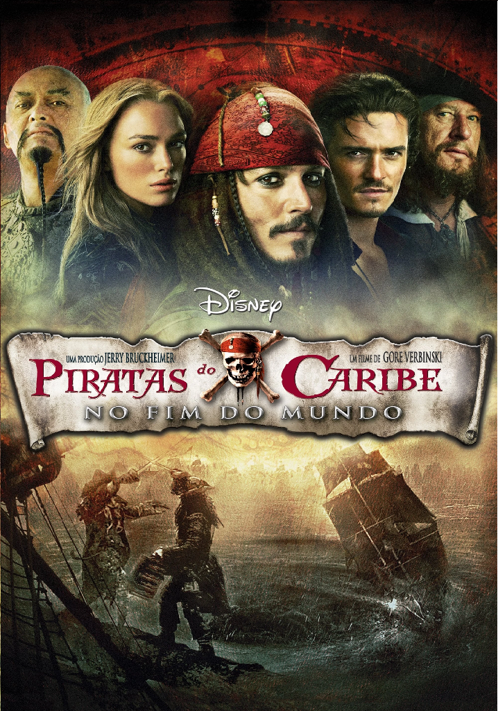
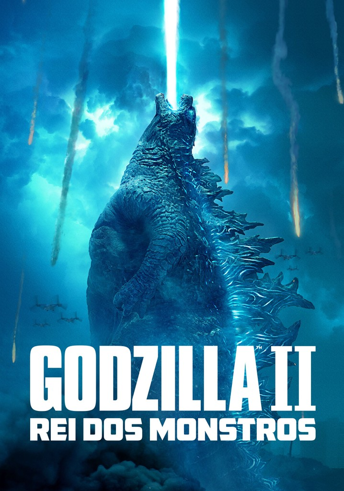
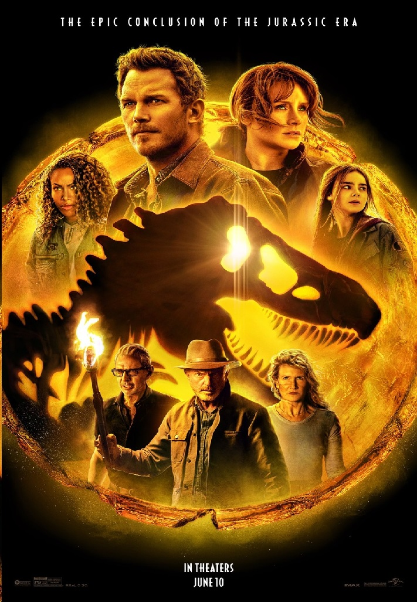
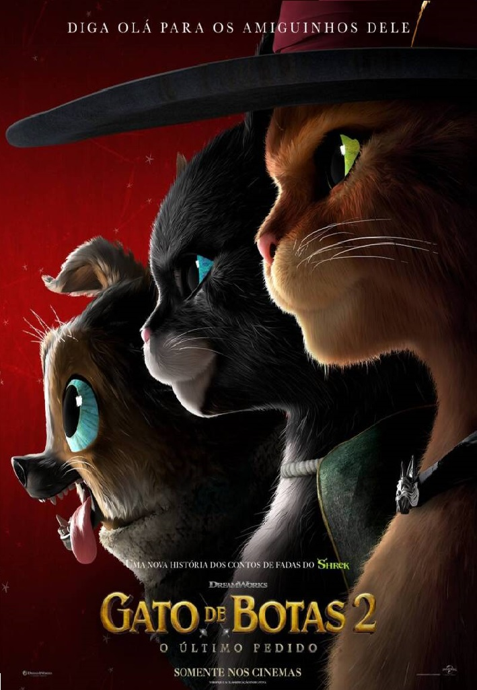

Filmes em Cartaz
Piratas do Caribe: A Maldição do Pérola Negra
140 min | Aventura/Ação

Piratas do Caribe: O Baú da Morte
150 min | Aventura/Ação

Piratas do Caribe: No Fim do Mundo
170 min | Aventura/AçãoPiratas do Caribe: Navegando em Águas Misteriosas
140 min | Aventura/Ação

Godzilla II: Rei dos Monstros
140 min | Ação/Ficção Científica

Jurassic World: Domínio
140 min | Ação/Ficção Científica
Carros
140 min | Infantil/Comedia

Gato de Botas 2: O Último Pedido
140 min | Aventura/AçãoSobre o Filme
X